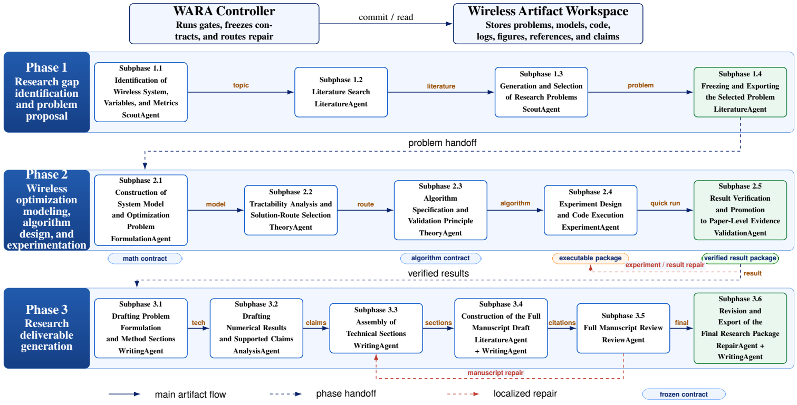

Discover the problem
Understand the wireless system, investigate the literature, and select a concrete research direction.
For wireless optimization.
From a research question to a model, an algorithm, and experimental evidence. A connected process of reasoning, execution, and verification.
01 / THE FRAMEWORK
The controller preserves approved decisions, checks each handoff, and routes failed checks back to the responsible stage.

Understand the wireless system, investigate the literature, and select a concrete research direction.
Formulate the model, develop the algorithm, execute experiments, and verify the resulting evidence.
Organize the verified study into research deliverables. A manuscript records the supported findings.
02 / REPORTED EVALUATION
Ten topic-paired studies, using the same GPT-5.5 backbone and structured Kimi K2.6 assessment.
Higher overall scores on 10 / 10 topics
LLM assessment of documented research. Independent expert validation remains essential.